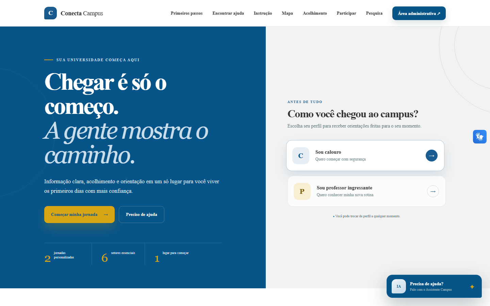
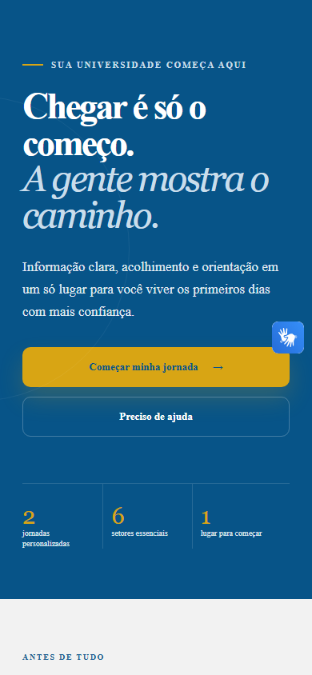

Portal por perfil
Conteúdo organizado para calouros, professores ingressantes e visitantes.
Acolhimento acadêmico em um só lugar
O Conecta Campus transforma orientações dispersas em uma jornada clara: informações por perfil, trilhas, mapa, assistente e escuta da comunidade.

01 / CONTEXTO
O sistema organiza orientações, localização e participação em uma experiência coerente para calouros, professores ingressantes e visitantes — e transforma retornos anônimos em visão agregada para a gestão.
Produto em funcionamento
Capturas reais produzidas no ambiente demonstrativo do Conecta Campus, sem dados pessoais ou institucionais reais.
Recursos existentes
Os módulos abaixo refletem funções implementadas no repositório principal.
Conteúdo organizado para calouros, professores ingressantes e visitantes.
Dezessete módulos com busca, filtros e progresso salvo no navegador.
Planta 2D, sete destinos e protótipo 3D para três campi fictícios.
Recuperação documental SQLite FTS5, fontes e Groq opcional com fallback local.
Sugestões, avaliações por setor e pesquisa anônima de validação.
Dashboard autenticado com filtros, indicadores e exportações CSV, XLSX e PDF.
VLibras nas rotas públicas, entrada por voz e protótipo visual de sinais isolados.
Interface responsiva e APK Flutter/WebView conectado às mesmas rotas públicas.
Como funciona
O portal não exige cadastro para as experiências públicas. A pessoa encontra orientação e decide quando participar; a gestão acessa somente a área administrativa autenticada.
Ver a arquitetura técnicaCalouro, professor ingressante ou visitante recebe pontos de partida adequados.
Trilhas, mapa e assistente ajudam a localizar informações e próximos passos.
Sugestões, avaliações e pesquisa anônima registram a experiência da comunidade.
Dados agregados alimentam filtros, indicadores, status e relatórios exportáveis.
Dupla plataforma
O portal funciona diretamente no navegador e também é reunido em um APK Android construído com Flutter. O aplicativo usa WebView para carregar as rotas públicas hospedadas e mantém a navegação dentro da experiência Conecta Campus.
O APK depende do backend publicado em HTTPS; ele não mantém uma base de dados separada.

APK AndroidAcessibilidade em camadas
O Conecta Campus combina recursos complementares para ampliar o acesso às informações, sempre apresentando com clareza o que é oficial e o que ainda é experimental.
Arquitetura do MVP
Uma aplicação Flask entrega as páginas e APIs, persiste dados no SQLite e mantém as chaves de serviços somente no backend. O aplicativo Flutter reúne as rotas públicas hospedadas.
Demonstração responsável
As telas deste showcase usam conteúdo demonstrativo e não expõem dados de estudantes, professores, usuários ou instituições. O Conecta Campus é um projeto acadêmico independente e não constitui sistema oficial.